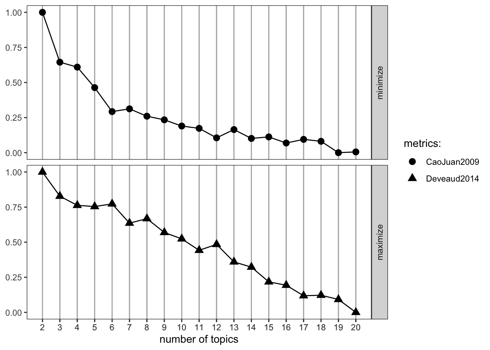
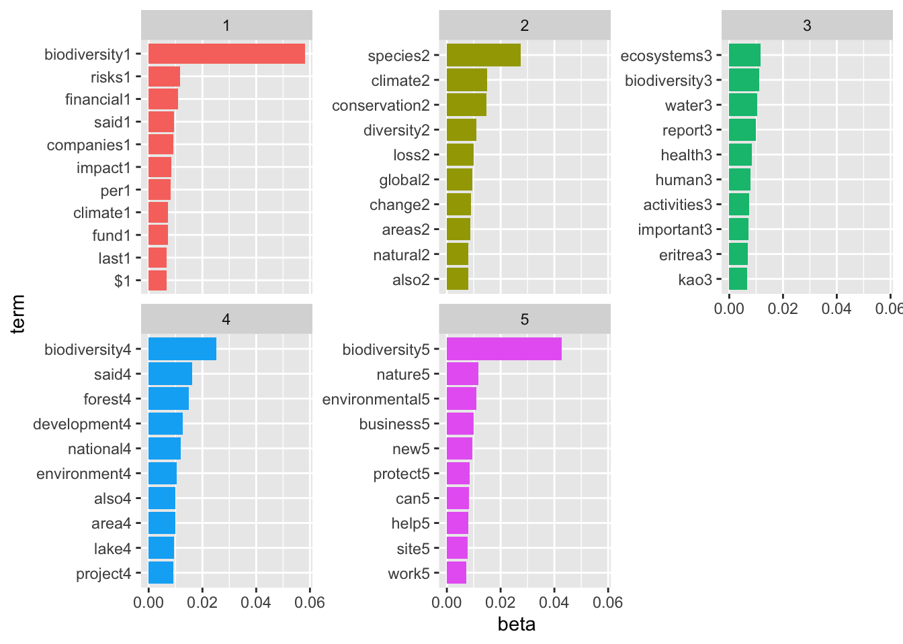
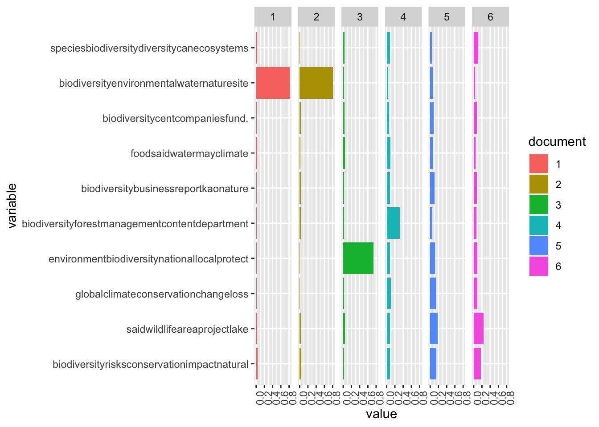

# Reading in files
pre_files <- list.files(pattern = ".docx",
path = "/Users/andrewbartnik/Desktop/misc/MEDS/Spring/text/text_analysis/data/lab2/files2",
full.names = TRUE,
recursive = TRUE,
ignore.case = TRUE)
# Saving objects
pre_dat <- lnt_read(pre_files)
bing_sent <- get_sentiments('bing')
nrc_sent <- get_sentiments("nrc")Evaluating Biodiversity Sentiment and Performing Topic Analysis
NLP
R
Assignments
ML
I used the Nexis Uni database to analyze the sentiment associated with Biodiversity. This assignment was part of EDS 231 - Text and Sentiment Analysis for Environmental Science
Sentiment Analysis
I used the Nexis Uni database to evaluate the sentiment surrounding biodiversity articles, and then analyzed the topics that articles fall under.
I first accessed the Nexis Uni database through the UCSB library. I then chose to search for articles related to biodiversity and downloaded a batch of 100 .docx files.
https://github.com/JBGruber/LexisNexisTools/wiki/Downloading-Files-From-Nexis
I cleaned artifacts of the data collection process (date strings, etc), and saved the metadata, article title, and paragraph contents to their own objects - adding this all together into a dataframe.
meta <- pre_dat@meta
articles <- pre_dat@articles
paragraphs <- pre_dat@paragraphs
data <- tibble(Date = meta$Date, Headline = meta$Headline, id = pre_dat@articles$ID, text = pre_dat@articles$Article)
head(data)# A tibble: 6 × 4
Date Headline id text
<date> <chr> <int> <chr>
1 2023-04-11 -Kao Releases Biodiversity Report Based on the TNFD Fr… 1 "Kao…
2 2023-04-11 -Kao Releases Biodiversity Report Based on the TNFD Fr… 2 "Apr…
3 2023-04-04 -PLATINUM RECOGNITION FOR MOY PARK'S BIODIVERSITY INIT… 3 "Apr…
4 2023-04-04 -PLATINUM RECOGNITION FOR MOY PARK'S BIODIVERSITY INIT… 4 "Moy…
5 2023-03-22 -Umicore - Growing our business with Zero Harm to biod… 5 "Bio…
6 2023-03-22 -Umicore - Growing our business with Zero Harm to biod… 6 "Mar…Exploring the data a bit!
# date freq
date_freq <- data %>%
group_by(Date) %>%
summarise(freq = n())
ggplot(date_freq, aes(x = Date, y = freq)) +
geom_bar(stat = "identity", fill = "steelblue") +
theme_minimal() +
labs(x = "Date", y = "Frequency", title = "Frequency of Dates 2022-2023") +
theme(axis.text.x = element_text(angle = 45, hjust = 1))Here, I’m unnesting each word in the article and joining them to their bing sentiment scores.
# Extract words
text <- data |> unnest_tokens(output = word, input = text, token = 'words')
# join to sent
sent_words <- text |>
anti_join(stop_words, by = "word") |>
inner_join(bing_sent, by = 'word') |>
mutate(sent_num = case_when(sentiment == "negative" ~ -1, sentiment == "positive" ~ 1))We can calculate the average sentiment for each article
sent_article2 <-sent_words |>
count(id, sentiment) |>
pivot_wider(names_from = sentiment, values_from = n, values_fill = 0) |>
mutate(polarity = positive - negative)
mean(sent_article2$polarity)[1] 2.05Now we can look at the distribution of sentiments across all the articles:
ggplot(sent_article2, aes(x = id)) +
theme_classic() +
geom_col(aes(y = positive), stat = 'identity', fill = 'lightblue') +
geom_col(aes(y = negative), stat = 'identity', fill = 'red', alpha = 0.5) +
labs(title = 'Sentiment analysis: Biodiversity', y = "Sentiment Score")And for the fun part - after we filter out stop words, we can join our words to the nrc_sent object which shows the associated sentiment for each word:
nrc_word_counts_bio <- text |> anti_join(stop_words, by = "word") |> inner_join(nrc_sent) |> count(word, sentiment, sort = T) # Now to look at specific nrc sentiments
sent_counts2 <- text |>
anti_join(stop_words, by = 'word') |>
group_by(id) |>
inner_join(nrc_sent) |>
group_by(sentiment) |>
count(word, sentiment, sort = T)
# Evaluating contribution to sentiment
sent_counts2 |> group_by(sentiment) |> slice_max(n, n = 10) |> ungroup() |> mutate(word = reorder(word, n)) |> ggplot(aes(x=n, y=word, fill = sentiment)) + geom_col(show.legend = FALSE) + facet_wrap(~sentiment, scales= "free_y") + labs(x = "Contribution to sentiment", y = NULL)
“Loss” seems to be associated with strongly negative emotions. Conservation also seems to elicit a strong emotional response.
Soil, wind, and diverse are associated with more negative emotions, which is misleading. Since these terms are pretty neutral in this context, we can reclassify their associated sentiments.
## Reclassifying
sent_counts2 |> filter(!word %in% c("soil", "wind", "diverse")) |> group_by(sentiment) |> slice_max(n, n = 10) |> ungroup() |> mutate(word = reorder(word, n)) |> ggplot(aes(x=n, y=word, fill = sentiment)) + geom_col(show.legend = FALSE) + facet_wrap(~sentiment, scales= "free_y") + labs(x = "Contribution to sentiment", y = NULL)
Thats better, harm and crisis are more appropriately associated with negative sentiment than soil and wind
Now we can plot the amount of nrc emotion words as a percentage of all the emotion words used each day. Then we can analyze the distribution of emotion words change over time.
nrc_emotion_counts <- text %>%
inner_join(nrc_sent) %>%
count(Date, sentiment)
# Aggregate the text from articles published on the same day
total_emotions_by_day <- nrc_emotion_counts %>%
group_by(Date) %>%
summarise(total = sum(n))
# Calculate the percentage of NRC emotion words per day
nrc_emotion_percentage <- nrc_emotion_counts %>%
left_join(total_emotions_by_day, by = "Date") %>%
mutate(percentage = n / total * 100)
# Plot the distribution of emotion words over time
ggplot(nrc_emotion_percentage, aes(x = Date, y = percentage, color = sentiment)) +
geom_line() +
theme_minimal() +
labs(x = "Date", y = "Percentage of Emotion Words", title = "Distribution of Emotion Words Over Time") +
theme(legend.title = element_blank(), legend.position = "bottom", legend.box = "horizontal")
The sentiment around the biodiversity term is overwhelmingly positive over the given time period. Trust was the second most frequent sentiment. This could be because most of the articles I downloaded were related to conservation efforts and achievements. The only time negative sentiment surpasses positive sentiment was at the end of February, when the only article published within a 6 day period was titled “Majorda locals object to alleged destruction of biodiversity, natural flow of water by RVNL”
Topic Analysis
Now for topic analysis. We’ll first build the corpus using corpus() from {quanteda}:
Next, we can use tokens(), also from {quanteda}, to construct a tokens object. tokens() takes a range of arguments related to cleaning the data.
# Making a corpus of the articles
corpus_bio <- corpus(x = articles, text_field = "Article")
stories_stats <- summary(corpus_bio)
#Lets take a look
head(stories_stats) Text Types Tokens Sentences ID
1 text1 378 767 26 1
2 text2 383 775 26 2
3 text3 228 394 12 3
4 text4 221 386 12 4
5 text5 655 1790 60 5
6 text6 661 1798 60 6Now, we’ll create a stopwords lexicon and remove each word contained in it from our tokens object. The quanteda function tokens_select() lets us do the removal.
# Removing punctuation, numbers, and stopwords.
toks2 <- tokens(corpus_bio, remove_punct = T, remove_numbers = T)
add_stops <- stopwords("en")
toks3 <- tokens_select(toks2, pattern = add_stops, selection = "remove")Now we can transform our data to prepare for topic modeling. We can create a document-feature matrix with quanteda::dfm(). Topic modeling doesn’t work with empty rows in this matrix, so we’ll need to remove those. We can do that here using {slam}, which is designed to deal with sparse matrices like ours.
# Creating the document feature matrix
dfm_bio <- dfm(toks3, tolower = T)
dfm <- dfm_trim(dfm_bio, min_docfreq = 2)
head(dfm)Document-feature matrix of: 6 documents, 3,297 features (89.93% sparse) and 1 docvar.
features
docs kao corporation published report business risk opportunity biodiversity
text1 17 2 3 7 9 3 2 11
text2 17 2 3 7 9 3 2 11
text3 0 0 0 0 5 1 0 9
text4 0 0 0 0 5 1 0 9
text5 0 0 0 0 5 2 0 33
text6 0 0 0 0 5 2 0 33
features
docs tnfd case
text1 5 1
text2 5 1
text3 0 0
text4 0 0
text5 0 0
text6 0 0
[ reached max_nfeat ... 3,287 more features ]sel_idx <- slam::row_sums(dfm)>0
dfm <- dfm[sel_idx,]We’re almost ready to run a model. We just have to come up with an initial value for k, the number of latent topics present in the data. Lets first start with 10. We will experiment with a few more values of k later.
Running topicmodels::LDA() produces two probability distributions: theta, a distribution over k topics (here, 10) within each document and beta,the distribution v terms within each topic, where v is our vocabulary (total unique words in our data set).
K = 10
# Lets first set K
k <- 10
topicModel_k10 <- LDA(dfm,
k,
method= "Gibbs",
control = list(iter = 500,
verbose = 25))K = 10; V = 3297; M = 100
Sampling 500 iterations!
Iteration 25 ...
Iteration 50 ...
Iteration 75 ...
Iteration 100 ...
Iteration 125 ...
Iteration 150 ...
Iteration 175 ...
Iteration 200 ...
Iteration 225 ...
Iteration 250 ...
Iteration 275 ...
Iteration 300 ...
Iteration 325 ...
Iteration 350 ...
Iteration 375 ...
Iteration 400 ...
Iteration 425 ...
Iteration 450 ...
Iteration 475 ...
Iteration 500 ...
Gibbs sampling completed!Let’s examine at our results. posterior() extracts theta and beta
# Extracting the result and examininng the attributes
result <- posterior(topicModel_k10)
attributes(result)$names
[1] "terms" "topics"# Getting beta, theta
beta <- result$terms
theta <- result$topics
vocab <- colnames(beta)
dim(beta)[1] 10 3297dim(theta)[1] 100 10terms(topicModel_k10, 10) Topic 1 Topic 2 Topic 3 Topic 4 Topic 5
[1,] "biodiversity" "said" "global" "environment" "biodiversity"
[2,] "risks" "wildlife" "climate" "biodiversity" "forest"
[3,] "conservation" "area" "conservation" "national" "management"
[4,] "impact" "project" "change" "local" "content"
[5,] "natural" "lake" "loss" "protect" "department"
[6,] "projects" "park" "biological" "environmental" "also"
[7,] "risk" "also" "conference" "minister" "meeting"
[8,] "investment" "protection" "biodiversity" "development" "officer"
[9,] "can" "land" "framework" "including" "programme"
[10,] "also" "living" "china" "efforts" "council"
Topic 6 Topic 7 Topic 8 Topic 9
[1,] "biodiversity" "food" "biodiversity" "biodiversity"
[2,] "business" "said" "cent" "environmental"
[3,] "report" "water" "companies" "water"
[4,] "kao" "may" "fund" "nature"
[5,] "nature" "climate" "$" "site"
[6,] "help" "natural" "financial" "eritrea"
[7,] "development" "agriculture" "use" "sites"
[8,] "activities" "major" "group" "areas"
[9,] "part" "resources" "funds" "protect"
[10,] "provide" "services" "climate" "life"
Topic 10
[1,] "species"
[2,] "biodiversity"
[3,] "diversity"
[4,] "can"
[5,] "ecosystems"
[6,] "human"
[7,] "animals"
[8,] "conservation"
[9,] "health"
[10,] "many" An alternative to specifying k based on theory or a hypothesis is to run a series of models using a range of k values. ldatuning::FindTopicsNumber gives us the tools for this.
# Running a sequence of K values
result <- FindTopicsNumber(dfm,
topics = seq(from = 2, to = 20, by = 1), metrics = c("CaoJuan2009", "Deveaud2014"),
method = "Gibbs",
verbose = T)fit models... done.
calculate metrics:
CaoJuan2009... done.
Deveaud2014... done.# Plotting our results
FindTopicsNumber_plot(result)
Let’s estimate another model, this time with a new value of k.
K = 5
# Set K
k <- 5
# Taking the same approach as before
topicModel_k5 <- LDA(dfm,
k,
method= "Gibbs",
control = list(iter = 500,
verbose = 25))K = 5; V = 3297; M = 100
Sampling 500 iterations!
Iteration 25 ...
Iteration 50 ...
Iteration 75 ...
Iteration 100 ...
Iteration 125 ...
Iteration 150 ...
Iteration 175 ...
Iteration 200 ...
Iteration 225 ...
Iteration 250 ...
Iteration 275 ...
Iteration 300 ...
Iteration 325 ...
Iteration 350 ...
Iteration 375 ...
Iteration 400 ...
Iteration 425 ...
Iteration 450 ...
Iteration 475 ...
Iteration 500 ...
Gibbs sampling completed!result <- posterior(topicModel_k10)
attributes(result)$names
[1] "terms" "topics"beta <- result$terms
theta <- result$topics
vocab <- colnames(beta)
dim(beta)[1] 10 3297dim(theta)[1] 100 10terms(topicModel_k5, 10) Topic 1 Topic 2 Topic 3 Topic 4
[1,] "biodiversity" "species" "ecosystems" "biodiversity"
[2,] "risks" "climate" "biodiversity" "said"
[3,] "financial" "conservation" "water" "forest"
[4,] "said" "diversity" "report" "development"
[5,] "companies" "loss" "health" "national"
[6,] "impact" "global" "human" "environment"
[7,] "per" "change" "activities" "also"
[8,] "climate" "areas" "important" "area"
[9,] "fund" "natural" "eritrea" "lake"
[10,] "last" "also" "kao" "project"
Topic 5
[1,] "biodiversity"
[2,] "nature"
[3,] "environmental"
[4,] "business"
[5,] "new"
[6,] "protect"
[7,] "can"
[8,] "help"
[9,] "site"
[10,] "work" One last value for K:
K = 7
k <- 7
topicModel_k7 <- LDA(dfm,
k,
method= "Gibbs",
control = list(iter = 500,
verbose = 25))K = 7; V = 3297; M = 100
Sampling 500 iterations!
Iteration 25 ...
Iteration 50 ...
Iteration 75 ...
Iteration 100 ...
Iteration 125 ...
Iteration 150 ...
Iteration 175 ...
Iteration 200 ...
Iteration 225 ...
Iteration 250 ...
Iteration 275 ...
Iteration 300 ...
Iteration 325 ...
Iteration 350 ...
Iteration 375 ...
Iteration 400 ...
Iteration 425 ...
Iteration 450 ...
Iteration 475 ...
Iteration 500 ...
Gibbs sampling completed!result <- posterior(topicModel_k10)
attributes(result)$names
[1] "terms" "topics"beta <- result$terms
theta <- result$topics
vocab <- colnames(beta)
dim(beta)[1] 10 3297dim(theta)[1] 100 10terms(topicModel_k7, 10) Topic 1 Topic 2 Topic 3 Topic 4
[1,] "biodiversity" "biodiversity" "can" "biodiversity"
[2,] "environment" "risks" "biodiversity" "forest"
[3,] "environmental" "conservation" "ecosystems" "said"
[4,] "nature" "also" "human" "lake"
[5,] "site" "activities" "world" "also"
[6,] "new" "nature" "health" "national"
[7,] "protect" "business" "many" "department"
[8,] "work" "impact" "animal" "project"
[9,] "local" "risk" "land" "meeting"
[10,] "protecting" "report" "aquatic" "state"
Topic 5 Topic 6 Topic 7
[1,] "species" "biodiversity" "climate"
[2,] "diversity" "per" "conference"
[3,] "natural" "cent" "conservation"
[4,] "said" "climate" "convention"
[5,] "resources" "companies" "framework"
[6,] "areas" "financial" "national"
[7,] "conservation" "year" "montreal"
[8,] "food" "fund" "china"
[9,] "extinction" "$" "biological"
[10,] "plants" "last" "eritrea" Although the Findtopicsnumber() optimization metrics didn’t suggest a consistent value for K, k=5 seems like a good number for interpretability. Running more topics resulted in more low-value words and worse interpretability between topics.
Now we can plot the top terms in each topic, and the distribution of topics across a sample of the documents
# Using k=5:
bio_topics <- tidy(topicModel_k5, matrix = "beta")
# Finding the top terms in each topic, turning them into a cool plot
top_terms <- bio_topics |> group_by(topic) |> top_n(10, beta) |> ungroup() |> arrange(topic, -beta)
top_terms %>%
mutate(term = reorder_within(term, beta, topic, sep = "")) %>%
ggplot(aes(term, beta, fill = factor(topic))) +
geom_col(show.legend = FALSE) +
facet_wrap(~ topic, scales = "free_y") +
scale_x_reordered()+
coord_flip()
We can assign names to the topics so we know what we are working with. We can name the topics by interpreting the overall theme or idea they represent, but for now let’s just name them by their top terms.
topic_words <- terms(topicModel_k10, 5)
topic_names <- apply(topic_words, 2, paste, collapse = "")We can explore the theta matrix, which contains the distribution of each topic over each document.
example_ids <- c(5:10)
n <- length(example_ids)
example_props <- theta[example_ids,]
colnames(example_props) <- topic_names
viz_df <- melt(cbind(data.frame(example_props),
document = factor(1:n),
variable.name = 'topic',
id.vars = 'document'))
# Plotting
ggplot(data = viz_df, aes(variable, value, fill = document), ylab = "proportion") +
geom_bar(stat="identity") +
theme(axis.text.x = element_text(angle = 90, hjust = 1)) +
coord_flip() +
facet_wrap(~ document, ncol = n)
Based off the top terms in each topic, topic 1 seems to be most closely associated with different levels of government and their efforts to work on biodiversity projects. Topic 2 seems most closely associated with management and conservation, topic 3 seems to be associated with the theme of international climate change, topic 4 looks to be associated with risk and impact assessment for companies, and topic 5 seems to be associated with the theme of climate change’s effect on natural ecosystems. K = 5 seems to have been a reasonable choice.